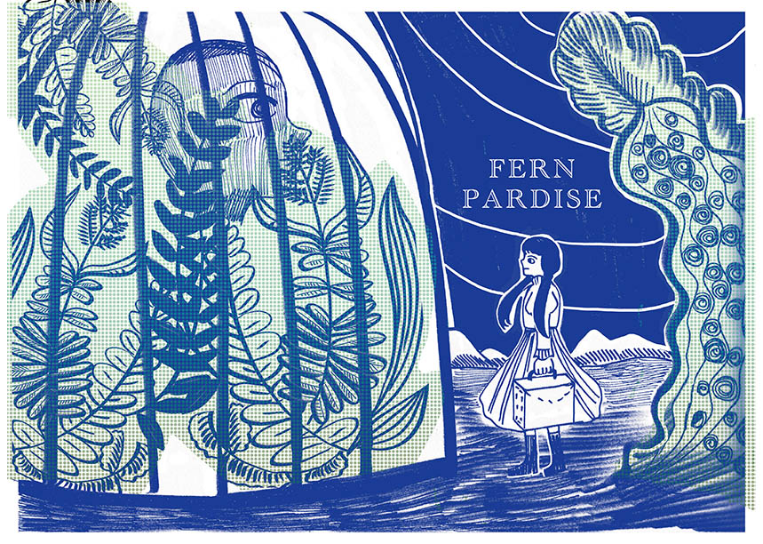

Fern Paradise蕨類樂園
A girl who lived in a society that people obsessed with ferns.
Because over growing and human’s greedy, people lost their face and didn’t notice they live in a huge cage actually.
In the end, only the girl survived for leaving the cage.
虛構的19 世紀，人類因為沉迷於蒐集蕨類植物，犧牲
一切卻不肯理會孩子的勸告，而導致滅亡的故事。




第四個網頁：回到 首頁